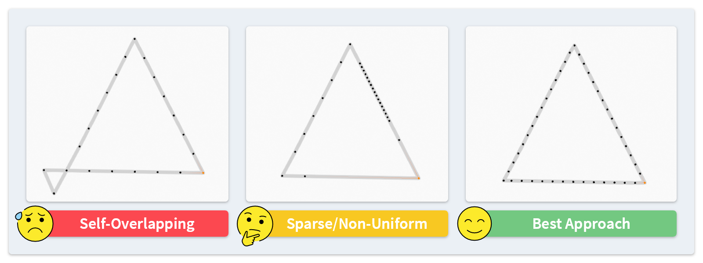
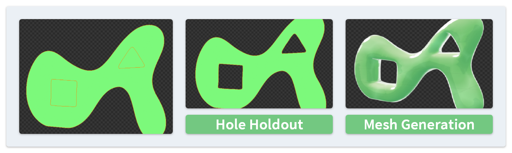

Limitations #
The add-on has a number of limitations in different aspects, including:
- Unfinished features of the add-on itself, which may be improved in future releases.
- Limitations due to Blender's own design, which may lead to different behaviors from common graphics software.
This page lists limitations which are general to multiple operators. Besides it, the constraints of 2D space can be found in Basic Usage. The limitation of each single operator will be recorded in their own page.
Shape of a Stroke #
The performance of the add-on may deteriorate with input strokes of certain shapes:
- Please avoid using self-overlapping strokes. Unlike common vector formats such as SVG, Blender does not define a fill rule and the rendering of the overlapping parts cannot be guaranteed.
- Most operators ignore the overlapping parts automatically, but sometimes it also causes crashes. To eliminate these parts, you can use the Offset operator with a value of zero.

- It is also recommended not to have too few points or unevenly distributed points along the stroke, as this can lead to poor quality mesh generation or line cleanup results. The Resample button in the add-on panel can be used to quickly redistribute the stroke points.
Holes #
Both this add-on and Blender itself have limitations supporting fill shapes will holes inside.
- Blender does not allow holes in a stroke, but some add-on operators like Boolean, Offset and SVG Paste can result in holes. In such cases, the corresponding geometry will be created, but will not be transparent.
- To display holes in Grease Pencil, Blender provides with a Holdout property in its material setting. The add-on also has a Hole Holdout operator to automatically set this property for shapes inside other shapes.

- In addition, some operators of the add-on have special behaviors when the input strokes have the holdout property.
- The Mesh Generation operator (currently only for the interpolation method) can turn these strokes into real holes in the mesh.
- The Offset and Sweep operators have the option to inverse the operation direction for these strokes.
Gradient Fill #
Currently the add-on does not have good support for gradient fill materials. When the add-on mentions the fill color in its options, it always refers to the base color, and the secondary color (which exists in the case of a gradient) is ignored.
Vertex Groups #
After some operators, including Boolean, Offset, and Line Cleanup, the weights of vertex groups are not preserved. If you need them for modifiers or rigging (including the rigging functions of this add-on), it is recommended to assign weights after using these operators.
(All emojis in this page are designed by OpenMoji – the open-source emoji and icon project. License: CC BY-SA 4.0)